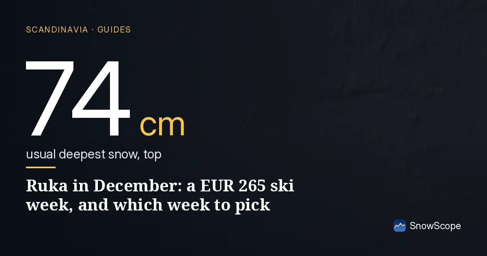

Ruka فدجنبر: سيمانة سكي ب 265 EUR، وأشمن سيمانة تختار
الفلوس الأول، حيت ساهلة: اللائحة الرسمية ديال 2026-27 ف Ruka كتعطي 58 EUR للنهار و 265 EUR ل 6 أيام. التلج خاصو انتباه كثر. نهار 15 دجنبر عادي، التاريخ ديالنا ديال 46 شتوة كيعطي 36 سم، ولكن فالسيمانة الأولى ديال دجنبر غير 39 % ديال الشتوات كان فيهم 30 سم ولا كثر.
شوف توقعات التلج مباشرة ديال Ruka فالتطبيق ديال SnowScopeالعلو ديال التلج، التنبيهات والخريطة 3D، فابور.
سيمانة قبل نوال، بالحساب
سكيباس ديال 6 أيام للكبار ب 265 EUR من أرخص الأثمنة الثابتة ديال السيمانة فهاد السلسلة. نفس اللائحة كتعطي النهار ب 58 EUR. Ruka و Pyhä عندهم لائحة وحدة، يعني نفس الأرقام فالجوج. السكنى، الطيارة والماكلة زايدين، وما كنعطيوش ليهم أرقام.
مع ثمن ثابت، التوفير ماشي فالسكيباس ولكن فالتواريخ: ختار سيمانة قبل عطلة نوال، فاش السكنى غالبا ساهلة تلقاها.


أشمن سيمانة فدجنبر
النسبة ديال الشتوات اللي فيهم 30 سم ولا كثر كتطلع بالزربة مع الشهر: 39 % من 1 حتى 7 دجنبر، 61 % من 8 حتى 14، 72 % من 15 حتى 21 و 85 % فسيمانة نوال. النهار العادي ديال 30 سم هو 5 دجنبر.
يعني بداية دجنبر بالتلج الطبيعي هي فأحسن الأحوال قرعة. من نص الشهر الحظوظ معاك، وسيمانة نوال هي الأضمن.
هنا العلو تقريبا ما كيفرقش
Ruka هي fell، تلة هابطة ومدورة، فيها تيليسييجات بين 286 م و 494 م، 25 كم ديال البيستات و 24 تيليسييج. التاريخ ديالنا كيعطي قيمة وحدة للمحطة كاملة: الفوق ما فيهش تلج كثر بزاف من التحت. عام ضعيف (واحد من 10) فيه 20 سم نهار 15 دجنبر، وعام زوين 46 سم. عمرو عميق، نادرا عريان: وحتى شتوة من 46 ما كانت الأرض عريانة نهار 15 دجنبر.
الاتجاه مستوي ولا أحسن شوية: المعدل ديال دجنبر كان 37 سم فأول 15 شتوة و 36 سم فآخر 15، والنسبة ديال سيمانات نوال اللي فيهم 30 سم طلعات من 80 % ل 93 %.
الحل التاني: Pyhä-Luosto
Pyhä-Luosto، للشمال الغربي، عندها تقريبا نفس دجنبر: 37 سم نهار 15 دجنبر عادي و 72 % ديال الشتوات فيهم 30 سم فسيمانة 15 حتى 21 دجنبر. نفس الأثمنة، 58 EUR للنهار و 265 EUR ل 6 أيام، والافتتاح الرسمي المبرمج نهار 27 نونبر 2026.
Ruka للتيليسييجات الكثار والقرية العامرة، Pyhä لسيمانة أهدى؛ التلج والسكيباس تقريبا بحال بحال.
نصايح للي كيتزلجو
- حجز من 15 دجنبر لفوق: 72 % من الشتوات كان فيهم 30 سم فهاديك السيمانة، مقابل 39 % فالأولى.
- حسب السكيباس ب 265 EUR ل 6 أيام وحط الجهد ديالك باش تلقى سكنى أرخص قبل العطلة.
- تسنى نهار قصير وفيه ضو قليل: نظم السكي على حساب الساعات القلال ديال الضو.
- دي حوايج ديال البرد بصح؛ دجنبر ف Lapland الفنلندية يقدر يكون بارد بزاف.
خرائط أخرى (مواقع خارجية)
المراجع والمصادر
- Ruka: official lift-pass prices (2026-27), checked 13 November 2026 www.ruka.fi/en/shop/skipasses
- Pyhä-Luosto: official lift-pass prices (2026-27), checked 13 November 2026 www.pyha.fi/en/en/skiresort-winter/lift-tickets
على هاد الأرقام
الأرقام ديال التلج: التاريخ ديال التلج ديال SnowScope، 46 شتوة اللي فاتت (1980-81 حتى ل 2025-26) فالعلوات ديال المحطة، مصحح بالعلو (تقدير لمنطقة، ماشي البلاغات ديال المحطة)؛ «تلج مزيان» = 30 سم ولا كثر فالأرض فالمعدل ديال السيمانة. الخريطة: العلو العادي ديال التلج نهار 15 دجنبر موزع على التضاريس حسب العلو. البيستات والتيليسييجات: OpenSkiMap. الأثمنة ديال السكيباس: اللوائح الرسمية ديال المحطات، متشافة نهار 13 نونبر 2026؛ الأثمنة تقدر تتبدل.
النشرات الرسمية ديال الانهيارات: EAWS – European Avalanche Warning Services
كيفاش تستاشهد بهاد المقال
للبحث، التعليم ولا الصحافة: الأرقام والرسومات تقدر تعاود تخدم بيهم بحرية تحت CC BY 4.0 مع هاد الاستشهاد.
SnowScope (2026), Ruka فدجنبر: سيمانة سكي ب 265 EUR، وأشمن سيمانة تختار, https://snowscope.app/blog/ar/2026/11/ruka-december-skiing-finland-early-season-price.html, تشاف ف 2026-11-14
SnowScope (Atlas Labs). (2026, November 14). Ruka فدجنبر: سيمانة سكي ب 265 EUR، وأشمن سيمانة تختار. SnowScope snow reports. https://snowscope.app/blog/ar/2026/11/ruka-december-skiing-finland-early-season-price.html
BibTeX
@misc{snowscope2026rukadecemberskiingfinlan,
author = {{SnowScope (Atlas Labs)}},
title = {Ruka فدجنبر: سيمانة سكي ب 265 EUR، وأشمن سيمانة تختار},
year = {2026},
month = nov,
howpublished = {\url{https://snowscope.app/blog/ar/2026/11/ruka-december-skiing-finland-early-season-price.html}},
note = {Published 2026-11-14 16:44 UTC; accessed 2026-11-14}
}· CC BY 4.0 · الطريقة، الداتا والأدوات →
Ruka: التلج والحرارة حسب العلو، هاد الشتا مقارنة مع اللي فاتت (الأدوات) →
تابع Ruka
فابور: ميساج ملي يجي التلج، والتوقعات كل صباح.
تقارير أخرى ديال التلج

Montgenèvre عندها 56 سم ديال التلج فالمعتاد فديسمبر فالباز ديالها، وهادشي كيخلي السواق ديال الويكاند يلقاو تلج كتر من Sestriere اللي فجهة خرى ديال الحدود.

ف Monterosa Ski الباص ديال النهار أونلاين ما بين 40.00 و 71.00 EUR. فدجنبر التلج كاين الفوق: 124 سم عادة ف 3030 م، و 6 سم ف 1207 م.

تزلج فـ Livigno بـ 51,50 EUR للنهار قبل 18 دجنبر، فاش كيوصل العلو ديال التلج فالقمة لـ 30 سم فـ 100 % من الشتوات اللي فاتو.